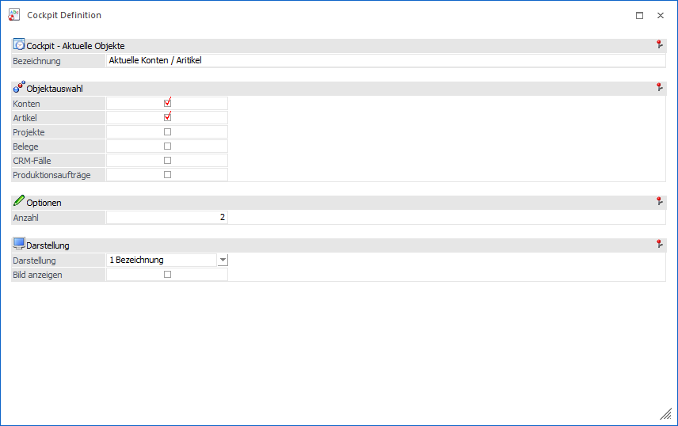

Mit dem Element "Aktuelle Objekte" können die zuletzt in der WinLine verwendeten Objekte in Form einer Kachel angezeigt werden. Über die Anwahl solch einer Kachel kann eine Aktion für das jeweilige Objekt ausgeführt werden.
Hinweis
Die linke Maustaste führt die zuletzt gewählt Aktion aus. Mit Hilfe der rechten Maustaste werden die unterschiedlichen Aktionen angezeigt.

Ø Bezeichnung
An dieser Stelle erfolgt die Eingabe des Namens, welcher in weiterer Folge als Überschrift für den Kachel-Ordner genutzt wird.
Ø Objektauswahl
Mit Hilfe von Checkboxen kann definiert werden, welche Objekte-Typen ausgegeben werden sollen.
Ø Anzahl
In dem Feld "Anzahl" kann die Anzahl der aktuellen Objekte hinterlegt werden. Dabei gilt diese Eingabe pro Objekt-Typ. D.h. bei der Eingabe von "5" und Aktivierung der Typen "Konten" und "Artikel" werden insgesamt 10 Kacheln gebildet.
Hinweis
Pro Objekt und Benutzer stehen maximal 20 Einträge zur Verfügung.
Ø Darstellung
An dieser Stelle kann der Inhalt der Kachel definiert werden, wobei zwischen den Varianten "0 - Nummer" und "1 - Bezeichnung" gewählt werden kann.
Ø Bild anzeigen
Im Standard erhält jede Kachel das Grundbild des Objekt-Typs, d.h. "K -> Konto", "A -> Artikel", etc. Mit Hilfe dieser Einstellung kann eine weitere Individualisierung erfolgen, so dass das Bild des einzelnen Objekts angezeigt wird.